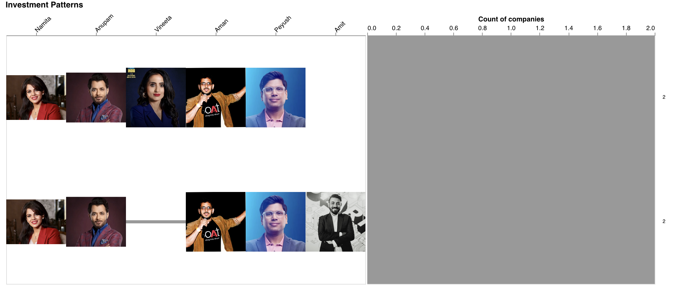

Shark Tank India has been a popular television show that has helped to
showcase some of the successful entrepreneurs and investors in the
country. It is no doubt that companies benefit a lot from appearing on
Shark Tank, getting a funding from sharks not only boosts the company's
potential financially but also their brand value. One of the most
interesting aspects of the show is the investment patterns of the
Sharks. By analyzing the investment patterns on Shark Tank India,
aspiring entrepreneurs can gain valuable insights into what types of
businesses and pitches are likely to attract investment, and what
strategies they can use to maximize their chances of securing funding.
One common investment pattern on Shark Tank India is that the Sharks
tend to focus on businesses that have the potential for high growth and
scalability. This means that businesses with innovative ideas and strong
growth potential are more likely to attract investment from the Sharks.
Additionally, the Sharks are often interested in businesses that have a
clear and well-defined market, as this helps to ensure that there is
demand for the product or service being offered.
Meeting the Sharks
Shark Tank India has brought together some of the most successful
entrepreneurs and investors in the country, who have become household
names due to their appearances on the show. The Sharks featured on the
show in both Season 1 and 2 are known for their experience, expertise, and
willingness to invest in promising businesses. Note: Click on the images to know more about them
Our first step of exploration is knowing how many companies that
appeared on Shark Tank got investments from Shark on TV. Through
analyzing the investment patterns, it is apparent that not all companies
are able to secure funding from the Sharks. While some businesses are
able to successfully secure investment, others do not receive any
offers. In the below chart we see that out of 320 companies that
appeared on Shark Tank 216 of it received offers from the Sharks, that
is 72%. It means that there are high possibility of receiving an offer
from the sharks. Out of these companies, 81.5% accepted the offer made
my sharks possibly after negotitaions. 18.5% of the companies did not
accept the offer from the sharks. Overall we see that Food industry
dominates all categories.
Note: this is an interactive chart, click on the surfaces of the category
to navigate back and forth
Diving into the Industries Favored by Shark
The industries that sharks invest in vary widely and depend on the
sharks's personal interests and expertise. Some sharks may focus on tech
startups, while others may prefer to invest in real estate, retail, or
healthcare. Additionally, some sharks may have a preference for
investing in companies that align with their values or have a strong
social mission. Ultimately, the investment decisions made by sharks are
influenced by a combination of personal preference, market trends, and
the potential for a high return on investment. With this below chart, we
will understands what industries interests sharks.
In this article, we will follow Shark Peyush Bansal to understand his
investment pattern. From the below chart we can see that Peyush is the
second highest investor on Shark Tank India. He has a very diverse
portfolio and is one of two only sharks that have invested in
Agricultural companies. He is really interested in Service industry with
17.3% of his total investment being in Service based companies. Followed
by Medical/Health with comprises of 17% of his investmment on Shark Tank
India.
Note: The number mentioned on the chart represents the amount(Lakhs, In
INR)each shark has invested
Exploring the Companies Backed by Sharks
Once we indentify a shark's preferred industry, the next step is to
explore the companies they have invested in previously. This research
can provide valuable insights into the type of businesses that appeal to
the sharks. By analyzing shark's investment history, it is possible to
identify some common themes or patterns that can be used for cater your
pitch to that particular shark.
Previously, we identified the industries Peyush has invested the most in
terms of amount. Here, we will explore the companies that Peyush has
invested in. Knowing the companies and doing research about the pitches
made by the companies will give a better picture about what Peyush looks
for in an entrepreneur. You can also explore the industries that
specific company belongs to by identifying the color of the bin in the
color legend.
Note: Select Shark of your choice from the dropdown provided below and
also click on the bins of the bar chart to navigate to the company's
website.
Sharks and Investment Strategy: Analyzing their Mutual and Individual
Investments
Let us analyze if our sharks like to invest Individually or prefer a
collaborator. Having multiple Sharks can benefit the company as they
will have multiple mentors to support and guide them. There is no doubt
that startups also hope to get multiple sharks on board to grow their
companies. In the chart below, we can explore the companies that got
joint investments from sharks and the ones that got Individual
investments. A line between a big blue circle and the smaller ones
indicates that the company got investment from that particular shark. If
the company is attached to more than one shark then it means that the
corresponding sharks are investors in that company.
Continuing our exploration of Peyush's investment, in the below chart we
can see the companies that Peyush, Aman, and Vineeta have invested in
together and Individually. We can see that Peyush has an almost equal
amount of partnered and Individual investments.
Note: Select Sharks and industries of your choice by clicking on the
checkbox, if a checkbox is selected then click on it to deselect the
option. Hover over the lines to highlight and hover over the circles to
know company and Shark's name.
Sharks
Industries
Unpacking the Investment Decisions of Sharks
Lets peel another layer of investment patterns by our sharks. Although
the chart above was cool and fun to play with, we lacked the exact count
of companies that the sharks have invested in collaboratively and
Individually. In this below chart, we will unpack the exact number of
companies a shark has invested invested in. We will also see how has had
the most joint investment, by this we will discover who likes to
partnership with a particular shark.
Since this chart is unconventional, we will be walking through it by
taking Peyush as our interest shark. Below we see that the chart in the
image shows all the shark's on the left and the number of companies they
have invested in on the left. As the chart is divided into seasons, we
will be focusing on Season 2. This shows us that Peyush has invested in
7 companies Individually.
In this next image, we will see what has been count of companies that
Peyush has invested in with just one other shark.
In the following image, we will see what has been the count of companies
that Peyush has invested in with two other shark.
In the below image, we see the count of the companies that Peyush has
invested in with 3 other sharks i.e., the count of companies that has 4
sharks invested in them.
In the below image, we see the count of the companies that Peyush has
invested in with 4 other sharks i.e., the count of companies that has 5
sharks invested in them.

Exploring by Season and Shark's involved
Here's an interactive chart to customize your choices for the above
exploration stages.
Note: Select Season number and the slide the range number to change the
number of sharks involved in deals
In conclusion, we hope you enjoyed exploring Investment patterns on Shark
Tank India at different stages and increasing granularity. As we delved
deeper into the data, we discovered some interesting insights into the
investment behavior of the Sharks.
we noticed that the Sharks had a diverse investment portfolio, with
investments spanning across various sectors such as healthcare,
technology, consumer goods, and many more. This indicates that they were
open to investing in different industries, provided the business idea was
compelling and had strong growth potential.
Furthurmore, we also saw that sharks that prefer investing with a peer
shark. This will not only cut down their risk but the company will also
benefit a lot from having two sharks on board as investors.
We hope that our charts provided a good medium for entrepreneurs and
investors alike to derive insights and understand the Investment pattern
on Shark Tank India.
Youtube Video Demo
Check out the video below for a demo about the above charts.
For the data visualization connoisseur, check out this notebook for the
source code and problem abstraction
observablehq